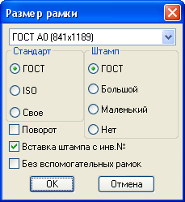

Команда: dialog_ramka_format_manager
Команда: dialog_ramka_format_managerВсе форматы листов в одной кнопке, также позволяет создавать собственные размеры листов.
Команда: dialog_ramka_format_manager


 Указывает параметры вставляемой форматной рамки. На выбор три формата ГОСТ, ISO и придуманые пользователем размеры. Чтобы добавить пользовательский размер следует выбрать формат Свое и в самом конце списка выбрать пункт Добавить... в появившемся диалоговом окне ввести параметры нового пользовательского листа. Параметр Поворот отвечает за поворот выбранного формата на 90 градусов (альбомное/портретное положение). Предпологается что в модель будут вставляться вспомогательные рамки выбраного формата для разбивки отъекта на листы. Если требуется вставка полного оформления формата в модели следует поставить галочку Без вспомогательных рамок. Поле Штамп определяет каким будет штамп для вычисления полезной площади вспомогательной рамки или какой штамп будет вставляться при отображении полного оформления формата. Галочка Вставка штампа с инв.№ отвечает за наличие в вставляемом листе формата маленького штампика (с лева внизу) в котором указывается инвентарный номер чертежа.
Указывает параметры вставляемой форматной рамки. На выбор три формата ГОСТ, ISO и придуманые пользователем размеры. Чтобы добавить пользовательский размер следует выбрать формат Свое и в самом конце списка выбрать пункт Добавить... в появившемся диалоговом окне ввести параметры нового пользовательского листа. Параметр Поворот отвечает за поворот выбранного формата на 90 градусов (альбомное/портретное положение). Предпологается что в модель будут вставляться вспомогательные рамки выбраного формата для разбивки отъекта на листы. Если требуется вставка полного оформления формата в модели следует поставить галочку Без вспомогательных рамок. Поле Штамп определяет каким будет штамп для вычисления полезной площади вспомогательной рамки или какой штамп будет вставляться при отображении полного оформления формата. Галочка Вставка штампа с инв.№ отвечает за наличие в вставляемом листе формата маленького штампика (с лева внизу) в котором указывается инвентарный номер чертежа.
Укажи точку вставки
Указывает точку вставки блока рамки формата, если вставка происходит в модели и не стоит галочка Без вспомогательных рамок потребуется еще угол поворота.